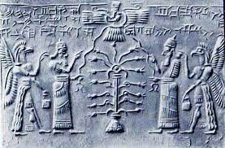
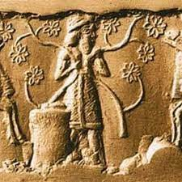
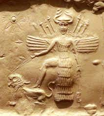

Embora não conheçamos a sua localização exacta, admitimos geralmente que se possa ter situado na Mesopotâmia. Os Sumérios conservaram a recordação desse inicio paradisíaco a que chamavam Dilmun, o que corresponde talvez à ilha de Bahrein. Existem muitas semelhanças entre Dilmun e o Éden. A água de Dilmun provinha de uma fonte. As mulheres davam à luz sem dor e um dos habitantes dói amaldiçoado depois de ter comido plantas proibidas. No entanto, também existem grandes divergências. A mais importante de todas era que o paraíso sumério não se destinava aos humanos, mas apenas aos deuses.
 Um outro texto sumério fala do deus Dumuzi, que morreu e desceu ao inferno. Pouco depois, ressuscitou. A ideia de salvação e de ressurreição para uma vida de perfeição futura é uma ideia fundamental. Os homens dos tempos bíblicos aspiravam de tal forma a uma ressurreição que procuravam preservar o culto a Dumuzi.
 Dumuzi era uma divindade antiga, conhecido na mitologia como esposo de Inanna. Na época neossumeriana (2100-2000), os reis identificavam-se com Dumuzi, praticando a hierogamia como seu representante, renovando o ano por meio do casamento sagrado com Inanna.
 Inanna era conhecida também sob os epítetos Estrela da Manhã e Estrela da Tarde. A ela foram concedidas, a princípio, as personificações de Grande Mãe, sendo a responsável pela abundância das colheitas, assim como pelas dádivas e pelos favores por ela distribuídos.